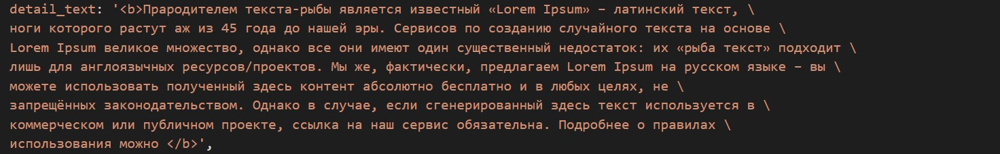

Инструкция
Команды консоли:
- ввести команду
ls, чтобы увидеть файлы и папки в текущей директории; - командой
cd <название папки сайта>войти в директорию сайта (если еще не в ней); - (если нужно воспользоваться только git-ом, то можно пропустить этот шаг) ввести команду
ssh localhost -p 222. Это позволит подключиться к среде с настроенным NodeJS. - после внесения изменений в данные (см. раздел данные) или какие-либо файлы (картинки, видео) в папке
srcнеобходимо ввести командуnpm run build. Данная команда пересоберет все статические файлы в директорииpublic_htmlсайта.
Команды Git
Если изменения делаются на хостинге:
git statusпокажет измененные, добавленные, перемещенные и удаленные файлы.git add .добавит изменения в индекс, т.е. это обязательный шаг перед созданием нового коммита.git commit -m "<придумать любое название коммита>"создаст новый коммит.git push origin developзальёт все изменения в удаленный репозиторий.
Если необходимо получить изменения на хостинге из удаленного репозитория:
git statusпокажет измененные, добавленные, перемещенные и удаленные файлы.
(если изменений нет, то пропустить шаги ниже)git add .добавит изменения в индекс, т.е. это обязательный шаг перед созданием нового коммита.git commit -m "<придумать любое название коммита>"создаст новый коммит.
(слудующий шаг)git pull origin developполучим изменения на хостинге.
Редактирование данных
Все текстовые данные хранятся в каталоге src/data. Данные имеют формат JSON5 и имеют некоторые
особенности при редактировании:
- Для удобства работы с длинными строками можно делать перенос строки, но в конце строки
необходимо в обязательном порядке добавить символ
\(после него не должно быть никаких символов) . символ\не переводит на новую строку в браузере, это лишь для удобства. - В поля, предназначенный для объемного текста (прим. визуальные редактор) можно добавлять HTML теги, чтобы отформатировать его. Полная кастомизация со списками и ссылками доступна только в визульном редакторе.
Детальное описание по форматированию каждого блока см. в разделе Данные.